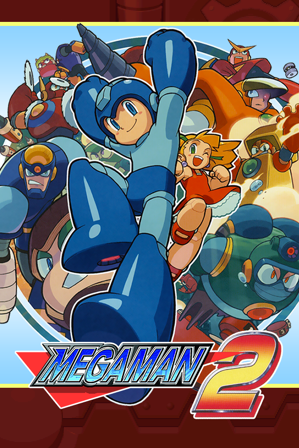

|  | |
| Playtime | Not Played |
| Last Activity | Never |
| Added | 4/29/2025 4:51:34 |
| Modified | 4/29/2025 23:40:02 |
| Completion Status | Not Played |
| Library | Playnite |
| Source | |
| Platform | Nintendo Entertainment System |
| Release Date | 12/24/1988 |
| Community Score | 86 |
| Critic Score | |
| User Score | |
| Genre | Action Platform |
| Developer | Capcom |
| Publisher | Capcom |
| Feature | Single Player |
| Links | Wikipedia MobyGames |
| Tag | [People] artist: Akira Kitamura [People] artist: Keiji Inafune [People] artist: Naoya Tomita [People] artist: Yasuaki Kishimoto [People] composer: Takashi Tateishi [People] director: Akira Kitamura [People] producer: Tokuro Fujiwara [People] programmer: Nobuyuki Matsushima |
Mega Man 2 (stylized as Mega Man II) is a 1988 action-platform game developed and published by Capcom for the Nintendo Entertainment System. It was released in Japan in 1988 and in North America and PAL regions the following years. Mega Man 2 continues Mega Man's battle against the evil Dr. Wily and his rogue Robot Masters. It introduced graphical and gameplay changes, many of which became series staples.
Although sales for the original Mega Man were unimpressive, Capcom allowed the team to create a sequel. They worked concurrently on other Capcom projects, using their free time to develop the game, using unused content from the first game. Takashi Tateishi composed the soundtrack, with Yoshihiro Sakaguchi serving as a sound programmer.
Mega Man 2 is the second best-selling Mega Man game, with more than 1.51 million copies sold (it was previously the best selling Mega Man game until Mega Man 11 outsold it). Critics praised its audio, visuals, and gameplay as an improvement over the first game. Many publications rank Mega Man 2 as the best game in the series and one of the greatest video games of all time. The game's soundtrack has also been considered one of the greatest video game soundtracks of all time. It has been included in several game compilations such as Mega Man Legacy Collection, rereleased for mobile devices, and become a part of console emulation services. A sequel, Mega Man 3, was released in 1990.
After his initial defeat, series antagonist Dr. Wily creates his own set of Robot Masters in an attempt to counter Mega Man: Metal Man, Air Man, Bubble Man, Quick Man, Crash Man, Flash Man, Heat Man, and Wood Man. He also constructs a new fortress and army of robotic henchmen. Mega Man is then sent by his creator, Dr. Light, to defeat Dr. Wily and his Robot Masters. Mega Man defeats the eight new Robot Masters and then challenges Wily himself. During the final fight, Dr. Wily flees into the caves beneath his fortress. When Mega Man follows, Dr. Wily attempts to trick Mega Man into believing he was impersonated by an alien. Mega Man defeats the alien, revealing it to be a holographic projection device with Dr. Wily at the controls of the now malfunctioning device. After the scientist begs for mercy, Mega Man spares Wily and returns home.
Like its predecessor, Mega Man 2 is a platform and action game. The player controls Mega Man as he traverses eight stages to defeat the bosses, Dr. Wily's Robot Masters: Metal Man, Air Man, Bubble Man, Quick Man, Crash Man, Flash Man, Heat Man, and Wood Man. Each Robot Master features a unique weapon and a stage related to their weapon's power. For example, Air Man shoots small tornadoes and is fought in a sky-themed level, while Wood Man can use a shield of leaves and is found in a forest-themed stage. After defeating a boss, their signature weapon becomes available to the player. Each Robot Master is weak to the weapons of certain other Robot Masters; therefore, choosing the order in which the levels are played is a vital component of the gameplay. After completing certain stages, Mega Man receives a special item. These items create platforms that allow Mega Man to access areas that he otherwise could not.
After defeating the eight Robot Masters, the player proceeds to Dr. Wily's fortress, which consists of six levels that are played linearly. As in the first game, the player is required to fight each Robot Master a second time in Dr. Wily's fortress. However, these battles take place in a single room rather than a series of linearly connected rooms. The room contains teleportation devices that lead to each Robot Master. The devices can be entered in any order, but are not labeled. Once the bosses are defeated again, the player must fight Dr. Wily.
Mega Man 2 features a few gameplay changes from the original Mega Man. A new item, the Energy Tank, allows a player to refill Mega Man's health at any time. Also introduced is a password system. A password is displayed after defeating each Robot Master, allowing the player to return to that particular point in the game after restarting the system. The password stores the particular list of completed Robot Masters, as well as the number of accumulated Energy Tanks. Unlike the first game, Mega Man 2 does not feature a score counter, and the player is unable to return to Robot Master levels once completed.
The first Mega Man game—released in 1987—was not successful enough to justify the immediate development of a sequel. According to Roy Ozaki, director Akira Kitamura had wanted to make a sequel to Mega Man, but producer Tokuro Fujiwara was against it. Kitamura then sought permission from Capcom's vice president at the time to make the game. The development team were given permission to develop a sequel on the condition that they work concurrently on other projects as well. The staff spent their own time on the project to improve upon the original by adding more levels and weapons, as well as improving the graphics. The project supervisor of the first Mega Man invited Inafune to the sequel's development crew; Inafune was working on a separate game at the time. On the previous game, Inafune worked as an artist and character designer but became more involved in the production process of the sequel. "Working on [Mega Man 2] marked my second year at this, and I even got to mentor a 'new kid', which opened up a whole new world of stress for me," Inafune recounted. The development time for the game was only three to four months.
Due to the limited amount of cartridge space available for the first game, elements such as planned enemy characters were omitted from the final product. The unused content was later transferred to Mega Man 2. The team was limited by the graphical capabilities of the Nintendo Entertainment System, and designed characters as pixel art to maintain consistency between the designs and final product; some design elements, however, were lost in the transition. The gameplay system from the original game was kept for Mega Man 2, but the team included more traps for the player to navigate. The game's three support items were added to aid the player because of complaints from consumers and Capcom's marketing department regarding the original game's high difficulty. Inafune's supervisor was "especially unsure" about the usefulness of the Energy Tanks.
The first game did not have any influence from fans, but for the second game, Kitamura wanted to get ideas from players and put them in. The developers allowed input from the public by including boss designs created by fans. Capcom received 8,370 boss submissions for the game, although even the designs for the final eight Robot Masters were "tweaked".
Inafune intended his artwork for Mega Man 2 to be more "anime-ish" than in the first game. A second difficulty setting was added for the North American and European releases. The original version was labeled "difficult", and a "normal" setting was created that made the "arm cannon" and boss weapons more powerful. Veteran video game cover illustrator Marc Ericksen painted the North American box art, which included Mega Man firing a pistol instead of his trademark Mega Buster. Ericksen explained that he was unfamiliar with the game and was directed by Capcom America to give Mega Man a pistol.
The soundtrack for Mega Man 2 was composed by Takashi Tateishi (credited as Ogeretsu Kun), with Mega Man composer Manami Matsumae (credited as Manami Ietel) included for having her work on the credits theme from the first game repurposed for the title screen, and for co-composing a minor part of the melody for Air Man's stage. Matsumae had been moved to the arcade division, considered more prestigious at the time, which necessitated a new composer. Matsumae and Tateishi worked closely during their time at Capcom, with Tateishi assisting Matsumae with U.N. Squadron in a similar manner during the period, albeit uncredited. Tateishi's musical background was unusual compared to his contemporaries at Capcom, in that he had not been classically trained but was instead drawing on his experience performing in a band. He sought to consciously move away from the more classical sounding themes that were common at the time. He was also relatively new to the games industry, having only been hired by Capcom earlier that year for Mad Gear (1988). Tateishi would not remain with the franchise after Mega Man 2, as he and Kitamura both resigned from Capcom soon afterwards to work on Cocoron.
Tateishi's initial compositions for the game were of varying moods, with some of them being considered "too cute" by Kitamura, requesting them to be changed to fit in with the rest of the soundtrack. A single fragment of this declined concept remains in the game as Crash Man's stage theme. Tateishi has indicated that "no one has" the earlier, softer score. Stylistically the score was influenced by Mezzoforte and Yellow Magic Orchestra.
The widely praised piece used for the first two Wily stages was heavily compromised due to data limitations, with Tateishi being forced to use the first eight measures of the song multiple times throughout it. Tateishi intended to compose a song exclusive to the second stage, but also abandoned this idea for the same reasons.
As with the previous game, the sound programming was handled by Yoshihiro Sakaguchi, credited as Yuukichan's Papa.
Though the first Mega Man game had relatively low sales, Mega Man 2 was a huge success. Since its 1988 release, Mega Man 2 has sold over 1.5 million copies worldwide. The game is the second highest selling in the Mega Man series and Capcom's 58th highest-selling game.
Mega Man 2 was critically praised. Electronic Gaming Monthly's four reviewers—Steve Harris, Ed Semrad, Donn Nauert, and Jim Allee—rated the game favorably, each scoring it 8 out of 10. They stated that it was better than the first Mega Man, citing the improved audio-visuals, new power-ups, and password system. Nauert and Allee, however, expressed disappointment that the game was less difficult than the first game. Nadia Oxford of 1UP.com complimented its aesthetics and gameplay. She further stated that Mega Man 2 improved the gameplay of its predecessor by removing excessively difficult elements. Mean Machines' two reviewers, Julian Rignall and Matt Regan, praised several aspects of the game. Rignall lauded the gameplay, citing its addictiveness and the puzzles. Regan praised the difficulty and called the gameplay balanced. Both reviewers complimented the graphics, calling them detailed and stunning, and described it as a great platform game. Retro Gamer editor Richard Burton described it as a "must-have" game for the system, comments echoed by two of Electronic Gaming Monthly's reviewers. Zach Miller writing for Game Informer attributed the success of the game to the players' option to defeat the stages in the order of their choosing. He praised the simple control scheme and the variety of weapons and items. GamesRadar ranked it the second-best NES game ever made, calling it "the pinnacle" of the 8-bit Mega Man games.
The game's soundtrack has been well received by critics. Joey Becht of IGN listed three stage themes from Mega Man 2 along with the main title song among the best in the series. In 2008, Game Informer listed Mega Man 2's introduction sequence as the fifth-best video game opening, citing the build up of excitement that the music and appearance of the character instills. The "Doctor Wily Stage Theme" was ranked second in ScrewAttack's "Top 10 Video Game Themes Ever" video. Nintendo Power' editorial staff praised the music in 2008, stating it is among the best on the platform. In 2009, Gamasutra's Brandon Sheffield describe the music as easily recognizable and lamented that contemporary video game music lacked that trait. The opening riff from the "Crash Man" stage's theme inspired the theme music for the YTV program Video & Arcade Top 10.[citation needed]
Mega Man 2 is a favorite among Mega Man fans, with many calling it the best in the series. Critics have also referred to the game as the series' best. Oxford considered it one of the most memorable game in the series, and Burton and Electronic Gaming Monthly both called the game the best in the series. IGN's Levi Buchanan listed three of the game's bosses among the "Top 10 Mega Man Robot Masters". Several publications consider the game a critical success and have listed it high on "top game" lists. At the end of 1989, it was the top ranked game on Nintendo Power's Top 30 list. In 1997 Electronic Gaming Monthly named it the 73rd best console video game of all time, saying it was the most appealing and challenging game in the series. In August 2008, Nintendo Power listed Mega Man 2 as the third best Nintendo Entertainment System video game. The editorial staff praised the polished improvements over the previous game. GameSpot named Mega Man 2 as one of "The Greatest Games of All Time". It ranked number 33 in Nintendo Power's "Top 200 Nintendo Games Ever" list and number 60 in Official Nintendo Magazine's "100 Best Nintendo Games" list. Miller considered it one of the greatest games of all time. In 2007, IGN's three editorial offices—United States, United Kingdom, and Australia—compiled a list of top 100 games. They listed Mega Man 2 as number 67, citing the action and strategic elements along with the impact it had on the series. Mega Man 2 was placed 4th on IGN's list of the Top 100 NES Games. Mega Man 2 was the first game on the cover of Electronic Gaming Monthly. Game Informer placed the game 32nd on their top 100 video games of all time in 2001.
Kitamura chose to leave Capcom and joined the company Takeru, where he worked on the game Cocoron instead of Mega Man 3.
Keiji Inafune claims the success of Mega Man 2 is what made the Mega Man series a hit that continues to spawn sequels. 1UP.com commented that the game helped establish the series as a prominent and commercially successful video game franchise. IGN cited Mega Man 2 as helping define the platforming genre. Retro Gamer credited it with helping the series obtain the global presence that allowed spin-offs and more sequels to be created. Many of the conventions of the original Mega Man series were defined by the first game, but Mega Man 2 added crucial conventions that were retained for the rest of the series. The traditional number of Robot Masters for the series is eight as used in Mega Man 2, rather than the six used in the original. It was the first in the series to include an opening cinematic. Mega Man 2 also introduced the Energy Tank item, special movement items, teleporter room, and password system, which became staples in future games. The Energy Tank became the series' iconic health refill item and later served as inspiration for a promotional "Rockman E-Can" drink. In developing Mega Man 9, producer Inafune and Hironobu Takeshita looked to the first two games in the series for inspiration, with Mega Man 2 serving as a standard to surpass in order to meet fans' expectations. Mega Man Universe was to feature a remake of Mega Man 2's story campaign, as well as feature customizable characters and levels. However, Capcom has officially announced the game's cancellation due to "various circumstances." In Super Smash Bros. for Nintendo 3DS and Wii U, Wily Castle, as depicted in Mega Man 2, appears as a selectable stage in both versions of the game. The stage returned in Super Smash Bros. Ultimate.
In 1990, Tiger Electronics produced a handheld electronic version with abridged gameplay. Mega Man 2 was remade in 1994 for the Sega Genesis game Mega Man: The Wily Wars, featuring updated graphics and sound. In 1999, Mega Man 2 was rereleased for the PlayStation as the second of six Rockman Complete Works discs, though only in Japan and under the original title Rockman 2. It is largely identical to the original NES release, but had a number of bonuses, such as a "navi mode" for beginners that presents the player with a slightly remade version of the game, detailed encyclopedic content, image galleries, and remixed music. Mega Man 2 was included with nine other games in the series in Mega Man Anniversary Collection for the PlayStation 2, GameCube, and Xbox, released between 2004 and 2005. The game's emulation is identical to the re-release contained in Rockman Complete Works. Also in 2005, Mega Man 2 was released alongside other Capcom games as part of a "Plug It In & Play TV Games" peripheral by Jakks Pacific. Mega Man 2 made its way to mobile phones in 2007. The game was added as a part of the Wii's Virtual Console service in PAL regions on December 14, 2007. In celebration of the ninth game's release in September 2008, Capcom released the game on August 26, 2008 in Japan and a North American release on September 15, 2008. In March 2009, Capcom released the game for iPhone OS, while in September of the same year the Complete Works version of Mega Man 2 was released on the Japanese PlayStation Store, making it available for download on the PlayStation 3 and PlayStation Portable. Inafune expressed a desire to remake Mega Man 2, similar to Mega Man Powered Up, but stated that such a project was dependent on the commercial success of the latter. A tech demo for the Nintendo 3DS called Classic Games was shown at E3 2010, displaying more than a dozen classic games, including Mega Man 2, using 3D effects. Reggie Fils-Aimé announced that the games were slated for release on the 3DS and would possibly use the 3DS' features, such as 3D effects, analog control, or camera support. The game was released on the 3DS via the Virtual Console in Japan on August 8, 2012 and was released in Europe and North America on February 7, 2013.
Mega Man 2 was novelized in the Worlds of Power series published by Scholastic in 1990. The novel mostly follows the game, even offering game hints at the end of some chapters. Besides the added dialogue, the one major variation in the novel is that Dr. Light fears Mega Man's chances against Dr. Wily's more powerful new robots and while attempting to duplicate him, accidentally turns him into a human being, a difficulty Mega Man must endure throughout the story. The book's cover also lacks the gun depicted on the North American box art of the game, due to a "no weapons" policy that Worlds of Power writers had to abide by.
The game was also adapted into the third story arc for the Archie Comics Mega Man comic, "The Return of Dr. Wily." In the arc, the Robot Masters are intended to either defeat Mega Man or infect him with a virus bit by bit as he absorbs their Special Weapons. All the Robot Masters are defeated but Mega Man ends up under Dr. Wily's control until the Mega Man Powered Up Robot Masters come to his rescue. Dr. Wily escapes and sets his course for the Lanfront Ruins in South America, foreshadowing an adaptation of Super Adventure Rockman.
The Mega Man 2 soundtrack is one of the most widely remixed soundtracks in gaming, and a great many covers were produced in the 2000s by various artists. Mixdown magazine described the soundtrack as one that would be "rehashed and reimagined at conventions and festivals until the end of time" and further that covering it had been a rite of passage in the early period of the nerd rock scene. Numerous artists and bands performed all or part of the soundtrack on studio albums in the 2000s, including The NESkimos on Battle Perfect Selection (2002), Chromelodeon on Year 20XX (2003), The Minibosses on Brass (2005), Mega Ran on his self titled album (2007), and The Megas on Get Equipped (2008). Many bands of the era additionally drew their stage names from the series, such as Armcannon, The Protomen and DJ Cutman.
Capcom endorsed some of these groups, officially licensing Mega Ran's 2007 cover album and bringing him to San Diego Comic-Con that year. In 2010, The Megas were hired by Capcom to produce music for a Mega Man Universe trailer. All of these groups performed at the gaming music event MAGFest through the 2000s and 2010s. Tateishi himself appeared at Super MAGfest 2019 and gave an interview on the development of the game. He also introduced Bit Brigade's performance of the score and performed on stage with Mega Ran. In a 2023 interview, Tateishi stated that his favourite rendition of the Mega Man 2 score was JAM Project's version. Many covers of Mega Man 2 tracks appeared on Brave Wave's Giants album in 2024, which included contributions from Tateishi himself.